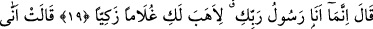

HZ. MERYEM’E
HZ. ÎSÂ’NIN DOĞUM HABERİNİN
VERİLMESİ
16. Kitab’da Meryem’i de an. Bir zaman o ailesinden ayrılıp doğu yönünde bir
yere çekilmişti.
17. Onlarla kendi arasına bir perde çekmişti. Biz de ruhumuzu (Cebrâil’i) ona
gönderdik. (Cebrâil) ona düzgün bir insan şeklinde göründü.
18. (Meryem) dedi ki: “Ben senden çok esirgeyen (Allah)a sığınırım. Eğer
(Allah’tan) korkuyorsan.”
19. (Ruh): “Ben, sadece Rabb’inin elçisiyim: Sana tertemiz bir erkek çocuğu
hediye edeyim diye (geldim)” dedi.
20. “Benim nasıl çocuğum olur? Bana bir insan dokunmadı ve ben bir kahpe
(zinakâr) de değilim.” dedi.
21. Cebrâil dedi ki: “Öyledir, Rabb’in bana: ‘O Bana kolaydır. Onu insanlara bir
mucize olsun diye ve bizden bir rahmet kılmak için (bunu yapacağız)’ dedi. Hem bu
önceden takdir edilmiş bir şeydir.”
Ey Muhammed “Kitab’da” yani Kur’an’da yahut o kitabın bir kısmı olan bu sûrede
İmrân kızı “Meryem’i de” onun haberini ve kıssasını da “an.” Burada Meryem’i
anmaktan maksad onun kıssasını anmaktır. Çünkü anmak eşyaya taalluk etmez. Meryem,
ibadet eden kadın (âbide) anlamındadır.
Başka kadınların değil de sadece Meryem’in bizzat ismiyle Kur’an’da anılmasının
hikmetini, bazı âlimler şöyle açıklamışlardır: Padişahlar ve eşraftan olan kimseler,
topluluk içerisinde hür kadınlarının adını söylemez ve onların adını herkese
yaymazlardı. Aksine hanımlarından bahsederken, “çoluk-çocuk”, “âile” ve “hanım” gibi